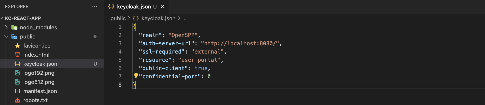

Beneficiary portal authentication
Contents
Beneficiary portal authentication#
In this article, the steps will be given on how to add a single sign-on to a beneficiary portal which improves user experience. This guide helps us to create a front-end application where a beneficiary registered in OpenSPP and can log in using Keycloak.
Prerequisites#
There is an existing Keycloak Server.
A realm, client, users, groups, and client scope are available in Keycloak.
Node.js (version 14 or higher) and npm (version 7 or higher) are available on your local machine.
You are familiar with Javascript and React (version 17 or higher).
Beneficiaries are in OpenSPP and Keycloak.
Objective#
After completing this guide, developer can create a front-end app using React and can log in to the front-end application using Keycloak.
Step-by-step#
A working sample application can be accessed at the provided link.
Create a new React application.
npx create-react-app kc-react-app
cd kc-react-app
Install the Keycloak adapter for React. Using
npmas the package manager, we install thekeycloak-js, the adapter for client-side applications.
npm install keycloak-js
Download client adapter settings from your Keycloak server. The JSON data contains the client settings we need to add to our application’s Keycloak configuration.
Log in to your Keycloak server. Select the
realmand click theClientin the side menu.
Click the
clientyou are using with your front-end application. You will be redirected to theclientpage.Click the
Actionsbutton on the upper right. Click theDownload adapter config. A dialog will appear with the adapter configuration settings. Click theDownloadbutton. A file is downloaded to your Downloads folder.
Copy the downloaded file to your
publicfolder. 
Integrate Keycloak with the front-end application.
Create a new file,
keycloak.jsin yoursrcfolder with the following code. Substitute the values from the downloaded configuration settings. Theurlis the value of theauth-server-urlkey. TheclientIdis the resource.
import Keycloak from "keycloak-js";
const keycloak = new Keycloak({
url: "http://localhost:8080/", //auth-server-url
realm: "OpenSPP", //realm
clientId: "user-portal", // resource
redirectUri: "http://localhost:3000", // local development redirect uri
});
export default keycloak;
Go to your
index.jsfile and initialize Keycloak.
import React from "react";
import ReactDOM from "react-dom/client";
import "./index.css";
import App from "./App";
import reportWebVitals from "./reportWebVitals";
import keycloak from "./keycloak";
const root = ReactDOM.createRoot(document.getElementById("root"));
keycloak
.init({
onLoad: "check-sso",
})
.then((auth) => {
if (auth) {
console.log(auth);
console.log("User is logged in");
} else {
console.log("User is not logged in");
}
root.render(
<React.StrictMode>
<App />
</React.StrictMode>
);
})
.catch((error) => {
console.error("Keycloak failed:", error);
});
reportWebVitals();
Update your components to use Keycloak.
Update your
src/App.jsfile and add the following code. If the user is successfully authenticated, a logout button is displayed otherwise the login button is visible. Clicking the login button redirects the user to the Keycloak login page.
import "./App.css";
import keycloak from "./keycloak";
function App() {
const login = () => {
keycloak.login();
};
const logout = () => {
keycloak.logout();
};
return (
<div className="App">
{keycloak.authenticated ? (
<button onClick={logout}>Logout </button>
) : (
<button onClick={login}>Login </button>
)}
</div>
);
}
export default App;
Run your application
Run the following in your command line or terminal.
npm start
You will be redirected to the browser. Click the
loginbutton, and the Keycloak login page will appear.